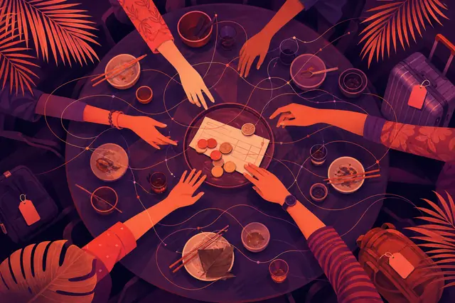

Mindfuse blog
Mindfuse turns real SEA conversations into the personas and tensions that explain why people choose, with cultural care. Ten pieces on what the signals say and what to do about them.
Honesty vs kindness: the cultural nuance SEA brands miss
Why Singapore and SEA audiences weigh honesty against kindness differently, and how brands can say true things without causing loss of face.
Kiasu, reframed: loss aversion as a design brief
Kiasu is often used as a punchline. For marketers it is a precise signal of loss aversion and care. Here is how to design for it respectfully.
Face and feedback: why SEA customers stay quiet
Low complaint rates in SEA rarely mean happy customers. How face shapes feedback, and how brands can design channels people will actually use.
Gen Z in Singapore: segment by tension, not by age
Treating Gen Z as one segment hides the tensions that drive behaviour. A practical way to segment young SEA audiences by situation and motive.
Singapore's festive calendar: read the codes, not the clichés
Chinese New Year, Hari Raya, Deepavali and Christmas each carry distinct cultural codes. How to plan festive marketing that feels respectful, not recycled.
Personas vs tensions: which one actually drives decisions?
Personas tell you who; tensions tell you why people move. How to combine both into audience insight that creative and media teams can act on.
Authenticity thrives where insecurity ebbs: a note to marketers
Imposter syndrome pushes marketers toward borrowed trends and vanity metrics. Evidence and collaboration build the confidence authentic work needs.
Multicultural nuance without stereotypes: a working method
How to market to Singapore's multicultural audiences with real nuance: segment by situation, involve communities and avoid lazy cultural shortcuts.

Who pays? Payment norms and group dilemmas in SEA
Splitting bills, treating elders and group-travel money tensions reveal how SEA audiences balance fairness and face. What brands can learn from them.
What is a perspective study? AI audience research, explained
How Mindfuse uses SOMIN perspective studies to find personas and tensions in SEA conversations, and where human cultural judgement takes over.